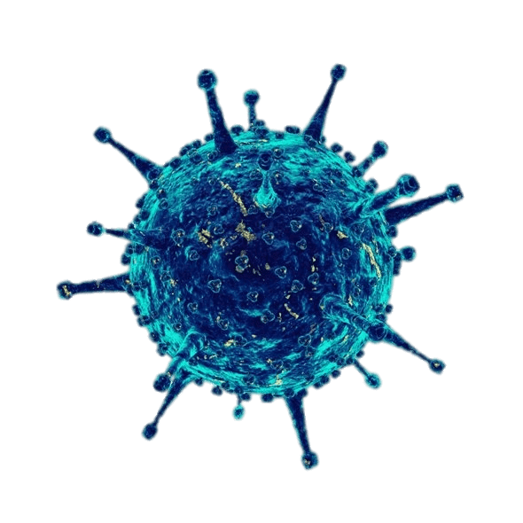

KORONA VIRUSI
OPCENITO
SARS
COVID-19
PREVENCIJA
SOCIJALNO DISTANCIRANJE
Virus ne možemo dobiti ako ne dolazimo u blizinu zaraženih!
Kako bismo se najbolje zaštitili od samog virusa važno je pripaziti da ne dolazimo u same kontakte s virusom i zaraženim osobama ili mjestima gdje je velika mogućnost zaraze poput trgovina, javnog prijevoza...
Ostajanje kod kuće i ne napuštanje doma osim u hitnim slučajevima poput odlaska po namirnice, liječniku itd. smanjuje mogućnost zaraze na najmanju moguću razinu.
Ali i odlazak liječniku treba izbjegavati osim u nužnim situacijama, a prije toga je potrebno dogovoriti se sa samim liječnikom putem telefona.

HIGIJENA
Higijena je nešto o čemu svakodnevno trebamo brinuti, a pogotovo u danima kada je prisutna grpa ili pandemija.
Svakodnevno dezinficiranje površina u domu, a pogotovo kvaka i prekidača za svjetlo omogućava sigurnost.
Svakim dolaskom u kuću treba temeljito oprati ruke, po mogućnosti treba se izuvati izvan ulaznih vrata, a odjeću koju smo nosili trebalo bi odmah skinuti.
Odlaskom na javna mjesta poželjno je imati masku i rukavice s kojima treba pažljivo i pravilno rukovati.
Kako preživjeti ovo razoblje?
U ovakvim je trenutcima često prisutan
stres
,
anksioznost
; nemamo volje raditi ni one najosnovnije stvari koje svakodnevno činimo što je prema psiholozima normalna pojava.
Kako bismo što bolje iskoristili vrijeme i bili produktivniji možemo pratiti nekoliko savjeta :
-organiziraj vrijeme
-radni prostor održavaj urednim i čistim
-ne po o odgađaj zadatke i poslove koje trebaš napraviti
-radi kratke pauze
-provedi barem 15 minuta radeći tjelovježbe
-radi ono što voliš
Povratak na pocetnu